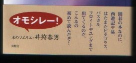

麻雀サイトで「なんで囲碁の本？」と思われるかも知れない。しかしこの本には中国が生んだゲームの話として、麻雀の話もでてくる。それで取り上げた。
著者はNo.17「
麻雀奇書」でも紹介した「麻雀の原理を探る」と同じ、永松憲一と言う人。基本的には囲碁の本であるが、帯の惹句にもあるとおり、パスカル・ピタゴラス・フロイド・ユングは云うに及ばず、カントからアグラー・ユークリッド・デデキメントからアルキメデスまでいっぱい出てくる（デデキメントなんて、初めて聞いた）。

もちろん中国ゲームの話であるから、易学、西遊記、仏教の話も盛りだくさん。ゲーム関連として、日本将棋の話もでてくる。ただただ著者の博覧強記に恐れ入るばかり。まさに惹句にある通り、「
こんなの、初めて読んだぞ！」
タイトルともなっている、
囲碁はなぜ交点に石を置くかという理由であるが、これは「五という字の古い形はという形で、上の横棒は天、下の横棒は地、真ん中の交点が人（ジン）、および人のいるべき空間を表す。したがって人は交点に石を置く」と云うことのようである。囲碁のことも易学のこともよく判らないけれど、このあたりは面白かった。
しかし内容が盛りだくさんすぎて、１回読んだだけでは内容が頭に入ってこない。理解しようと思ったら、10回くらいは読み返す必要があるか。ひょっとしたら、今年のユニーク書ベスト選にノミネートされるかも知んないな。